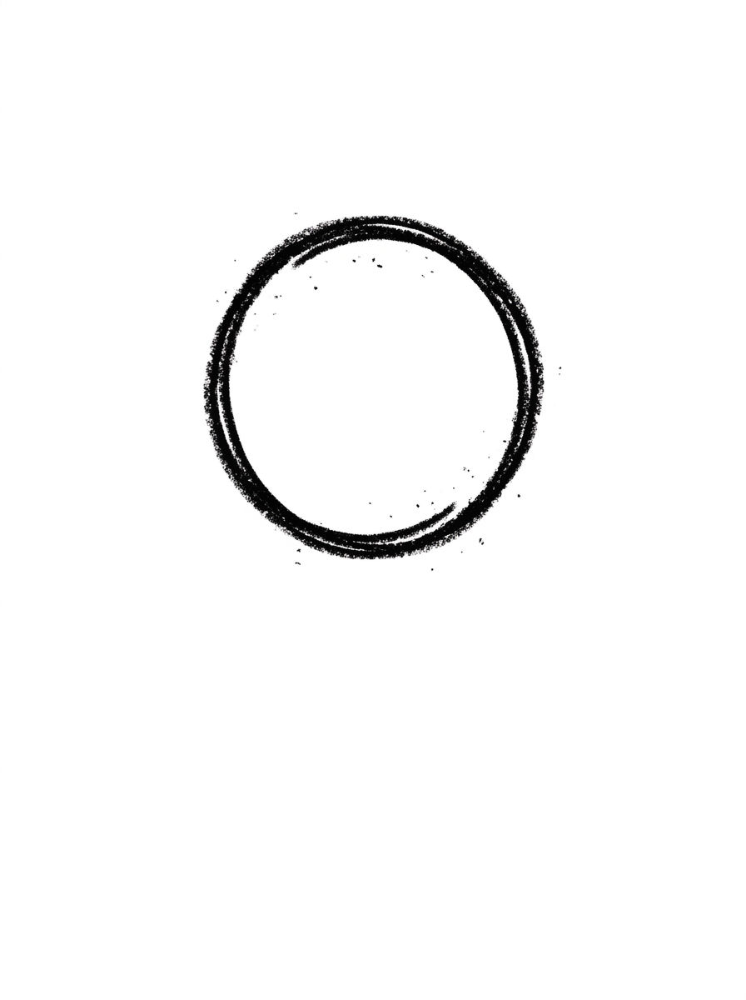
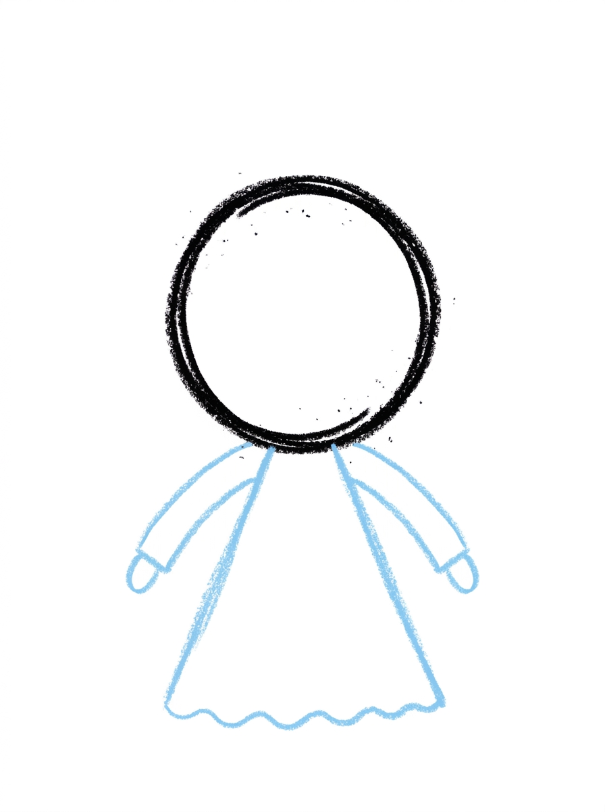
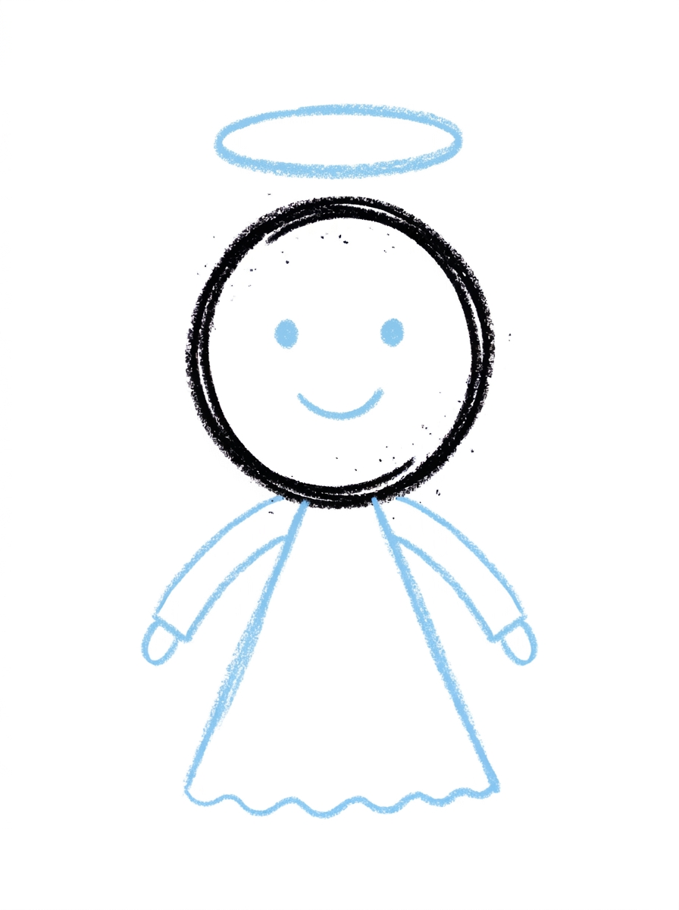
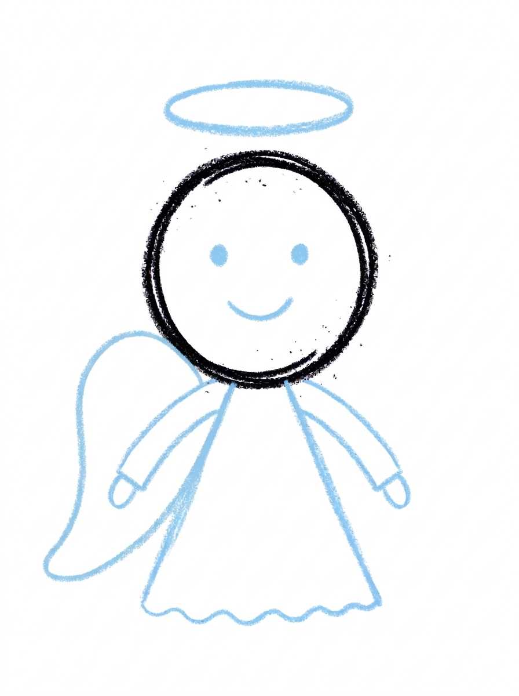
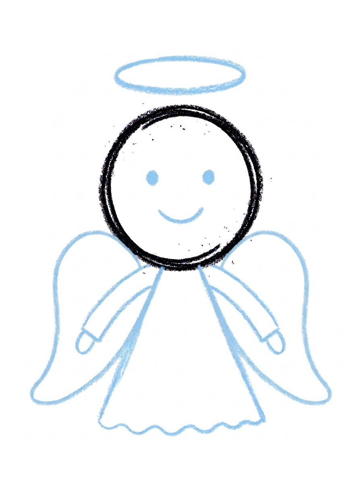
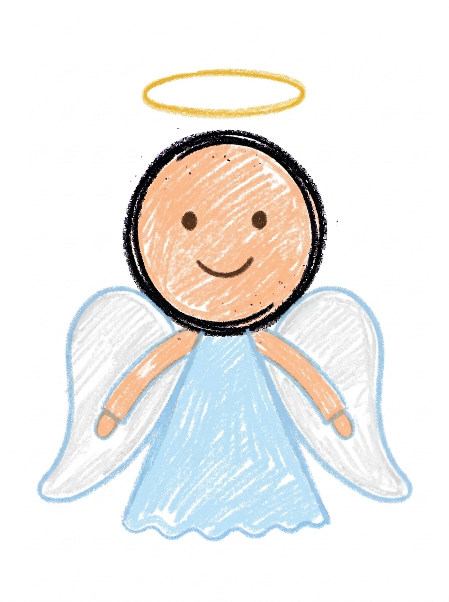

Angel Drawing for Kids How to Draw An Angel in 6 Easy Steps
Quick Answer
Draw an angel in six easy steps: a big round head, a long triangle gown with two arms, dot eyes, a smile and a halo, then one big wing on each side. Color the gown pale sky blue. Made for ages 3 and up — free printable, no signup needed.
At a Glance
- Subject: How to draw an angel
- Ages: 3+
- Steps: 6 steps
- Time: ~15 min
- Difficulty: Easy
- Supplies: Paper, crayons
Angels seem like a grown-up drawing, but this one is secretly simple — it's stacked from one big circle, one long triangle, two curved wings, and a floating oval halo. If your child can draw a circle and a wavy line, they can draw this sweet angel.
✏️ Draw Your Angel in 6 Easy Steps
One step per box — this step by step angel drawing shows each new part in a different color so kids can see exactly what changed.
Step 1: The Head

Draw one big circle. That is the angel's head.
Step 2: The Gown and Arms

Draw one long triangle hanging from the bottom of the head, with a wavy line along its bottom edge — that is the gown. Add one arm curving down on each side of the gown.
Step 3: The Face and Halo

Draw two dot eyes and one small smile on the face, and one flat oval floating just above the head. That is the halo.
Step 4: The Left Wing

Draw one big curved wing shape attached to the left side of the gown.
Step 5: The Right Wing

Draw the same big curved wing shape on the right side of the gown, matching the first one.
Step 6: Color It In

Color the gown pale sky blue and the wings white. Make the head and arms warm peach, the halo golden yellow, and the eyes and smile dark brown. Great drawing!
📊 Angel Drawing by Age
Every age can join in — just adjust the job.
| Age | What they can do | Tip |
|---|---|---|
| 3-4 | Draw the big round head and color the finished angel's gown pale sky blue. | Start the head circle high on the page — the long gown needs plenty of room to hang below it. |
| 4-5 | Add the long triangle gown with its wavy hem, the two curving arms, and the floating halo. | The halo is just a flat oval hovering above the head — kids love that it floats instead of touching. |
| 6+ | Finish all six steps, including drawing the two big curved wings to match each other. | Folding the paper lightly down the middle first gives older kids a guide for placing the wings evenly on both sides. |
🖨️ Download Your Free Angel Drawing Printable
The printable lays out all 6 steps one per box, big enough for little hands — kids draw right alongside each step.
⬇️ Open Free Printable 🖨️ Print🎁 Free printable for ages 3+
👼 Angel Sky Page
Give your angel a sky to float in: draw soft cloud bumps along the bottom of the page, a few stars around the wings, and a big moon or sun in one corner, then decide together who this angel watches over — a baby sibling, the family pet, or the garden at night. Write one sentence about the angel under the drawing (or dictate it for a grown-up to write) and the picture becomes a keepsake your child can give to someone they love.
What You'll Need to Draw An Angel
All you need is a pencil, an eraser, and crayons or markers. For the colors in the tutorial, have pale sky blue ready for the gown, white for the wings, warm peach for the head and arms, golden yellow for the halo, and dark brown for the eyes and smile. Regular printer paper or a sketchbook both work.
What They're Learning
This tutorial practices circles (the head), long triangles with a wavy edge (the gown), flat ovals (the halo), and big mirrored curves for the wings — great symmetry practice. Kids also work on placement skills, floating one shape above another without touching, and the patience of drawing the second wing to match the first.
Make It Yours
Try a Christmas angel with a gold gown and star dots, a guardian angel holding a tiny heart drawn at the gown's front, a sleeping angel by swapping the dot eyes for curved closed eyes, or a whole row of angels in different gown colors for a holiday banner. A night version with a dark blue background and a white crayon angel looks magical.
🛒 Our Favorite Drawing Supplies
These are the supplies we reach for in our own home — washable (because kids), quality paper, and enough colors to avoid fights.
As an Amazon Associate, MomYouNeedThis earns from qualifying purchases — at no extra cost to you.
💡 Angel Drawing Tips for Parents
Steps 4 and 5 are mirror images, and matching the second wing to the first is the trickiest part of the whole tutorial. Have your child draw the left wing, then turn the paper sideways or upside down for the right one — flipping the page makes the mirrored curve feel much more natural to draw.
In step 2, remind kids that the gown is one long triangle and the wavy line is only along its bottom edge — drawing waves up the sides is the most common slip. And in step 3, the halo must float: a visible gap of white paper between the halo and the head is what sells the glow.
👼 Angels in Stories and Pictures
Angels have appeared in stories for thousands of years — as messengers, helpers, and guardians who watch over people. Artists long ago needed a way to show that angels could travel between heaven and Earth, so they painted them with wings. The glowing ring above an angel's head, the halo, is the artist's way of drawing light itself.
That is why the angel on a Christmas tree, in a storybook, and in your child's drawing all share the same recipe: wings, a long gown, and a halo. Your child is using a picture-language that artists have handed down for centuries — worth mentioning while the crayons are out.
✋ Warm-Up: Big Gentle Curves
Angels are made of long, calm curves, so warm up slowly. Draw big rainbow arcs across a scrap page — the wider the better — then draw each arc a partner right beside it. Feathery wings are just arcs stacked like roof tiles, and practicing the arc alone first makes the wings in the tutorial feel familiar.
This is the one tutorial where a wobble truly does not matter: a slightly uneven wing looks hand-drawn in the good way, like the angels in old storybooks. Save your child's patience for coloring inside the gown, which is the longest stretch of the page.
📖 Give Your Angel a Story
Guardian angels have one job: watching over somebody. Ask your child who their angel is looking after — a little brother, a grandmother, the family dog — and have them dictate a sentence for under the drawing. Angels with an assignment become favorites fast, and the picture often ends up taped beside a bed.
The star tutorial pairs naturally with this page: angels and stars share the night sky in every Christmas story ever told. Two finished drawings, one theme — the start of a holiday set to bring out again in December. The angel’s companions are the peaceful how to draw a dove and the quiet how to draw a church.
❓ Angel Drawing FAQs
What is the easiest way to draw an angel?
Start with one big circle for the head, then build down and out: a long triangle gown with two arms, dot eyes, a smile and a floating halo, then one big curved wing on each side. The six steps turn an 'impossible' angel into shapes your child already knows.
What age is this angel drawing for?
It's made for ages 3 and up. The shapes are all preschool-friendly — circles, triangles, and curves — and younger kids can do the head, gown, and coloring while older kids add the matching wings themselves.
What supplies do we need?
A pencil, an eraser, paper, and crayons or markers. For colors you'll want pale sky blue for the gown, white for the wings, warm peach for the head and arms, golden yellow for the halo, and dark brown for the face.
Is the printable really free?
Yes — every printable on MomYouNeedThis is 100% free, including this angel drawing tutorial. There is no signup, no email, and no catch — just download, print, and draw.
How do I print it?
Open the PDF and choose Print, then set the scale to 100% (sometimes called Actual Size) so the steps print at full size. The tutorial is designed for regular US Letter paper, and plain printer paper works perfectly.
How do I draw the halo?
The halo is one flat oval floating just above the head — it doesn't touch the hair or the head at all. That little gap is what makes it read as a glowing halo, and it's the easiest shape in the whole tutorial.
How do I make the wings match?
Draw the left wing first in step 4 — one big curved shape attached to the side of the gown — then copy the same shape flipped on the right in step 5. They don't need to be identical; close cousins are fine, and a slightly wavy edge looks like feathers.
Can my angel wear a different color gown?
Absolutely — angels wear every color in the rainbow. Try a pink gown with gold wings, a lavender gown, or a rainbow hem along the wavy bottom edge. The shapes stay the same; the colors are where your child makes it theirs.
📚 Keep Exploring
- ✏️ All 76 Drawing Tutorials 76 free step-by-step drawing tutorials for kids.
- 🎄 Christmas Coloring Free Christmas coloring pages for kids.
- ✏️ Drawing Practice Free printable drawing pre-writing worksheet for toddlers.